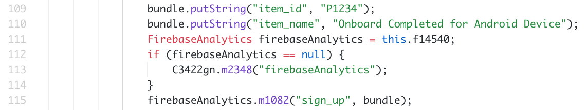
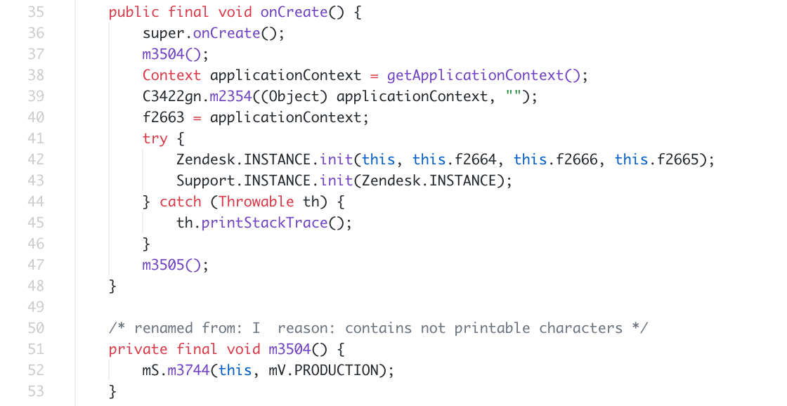
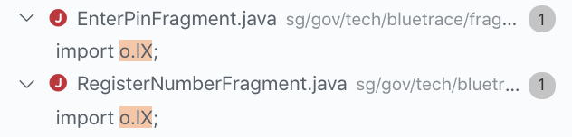
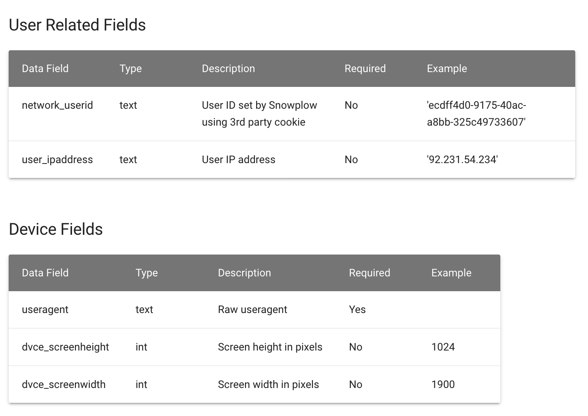
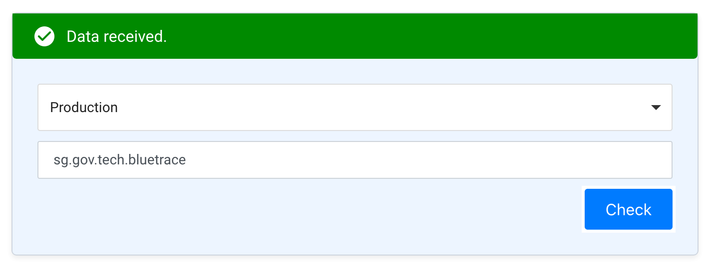
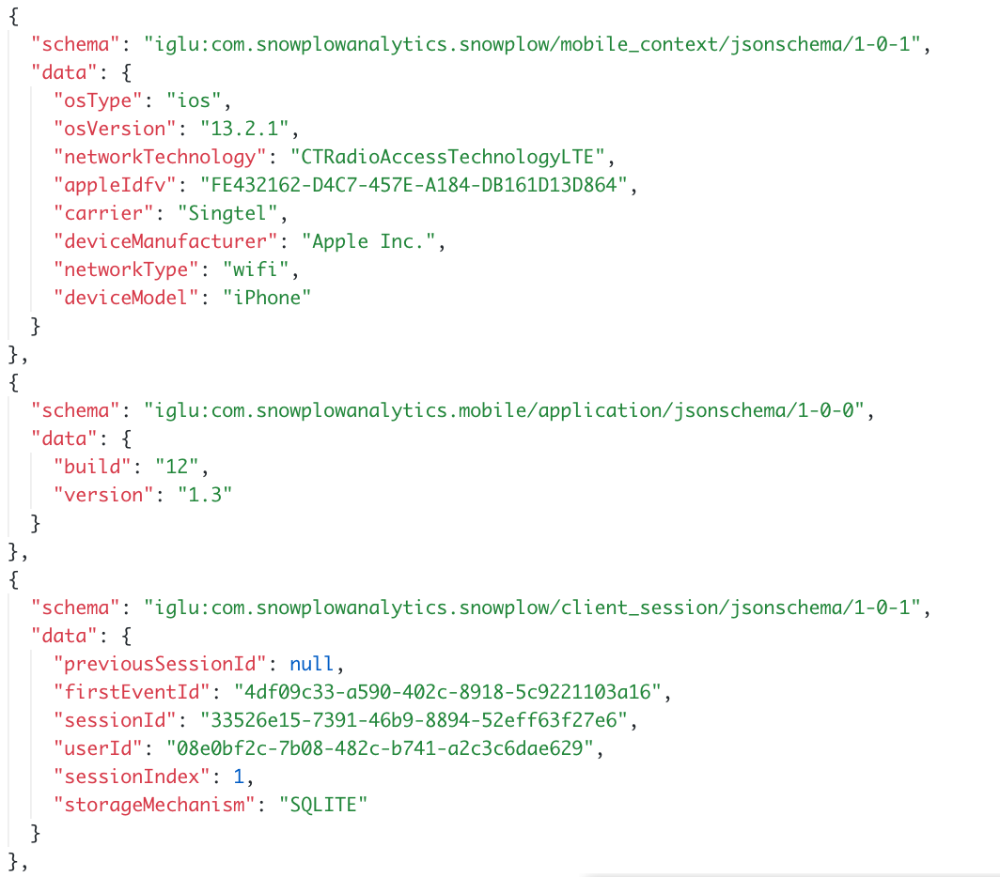

A couple of days ago, I saw the announcement for a new app called TraceTogether. It’s an app by the government to make contact tracing easier. The app appeared on a lot of news websites because it’s a good smart nation initiative.
I was interested to find out how Bluetooth was used. I launched my terminal and decompiled the app using Jadx to find out what’s powering the app.
The app uses bluetooth to log other people’s devices around you. I have done some testing myself to know that one of the ways to figure out who’s around you is to use Bluetooth Low Energy (“BLE”). It makes sense to use BLE because leaving it on all day in the background will not drain your battery. The signal strength of the pings can be used to deduce the distance between users. It’s also how airpods use it to connect to your iphone.
While I was looking through the code, I saw that the app was using Firebase Analytics and Crashlytics. I found one instance where Firebase Analytics was used: an event is triggered when the user signs in and gives the app permissions. While it is common for apps to use these two analytics libraries to track user engagement and app crashes, the inclusion of such libraries undermines the developers’ goal to keep data collection minimal.
What caught my eye was another library that was included in the app called Snowplow Analytics. It’s the first time I’ve heard about it and Google tells me it’s an open-sourced analytics platform. Interestingly, a line in the code points to this obscure domain “snowplow-mobile.wogaa.sg”. I visited wogaa.sg and it turns out that wogaa is actually a government data collection service. What’s going on here?
 The FAQ on wogaa describes itself as “a centralized internet-facing government platform to analyze and improve digital services”. A quick look at wogaa’s documentation tells me that it can log user ip addresses, device type, carrier etc and deduce the user’s location based on this information. With this library packaged in the app, there’s no point in anonymising any information because your data is logged on another service anyway.
 By using a proxy, I can intercept the requests to wogaa to find out what data is sent back. You can view a raw request here. From download to setup, there were 19 requests sent to wogaa.
Clearly, some parts of the app’s FAQ are wrong. I went back to the press releases and tried to verify statements about the app. On data hygiene, I found that all data is uploaded even if the data is older than 21 days. There is no code to purge local data beyond a certain time.
On the following day, I contacted the team and asked them about my findings. Their response was that wogaa is built by the same team and it’s standard practice to include wogaa in their products. They overlooked the fact that the app is sending more data than necessary so they’re removing wogaa and working to purge local data after 21 days in the next update. During my call with them, I can see that they are a team with great intentions. If you’re concerned about your privacy, it’s best to install the app only after they've updated the app. Otherwise, this app is a great initiative to improve our contact tracing efforts.